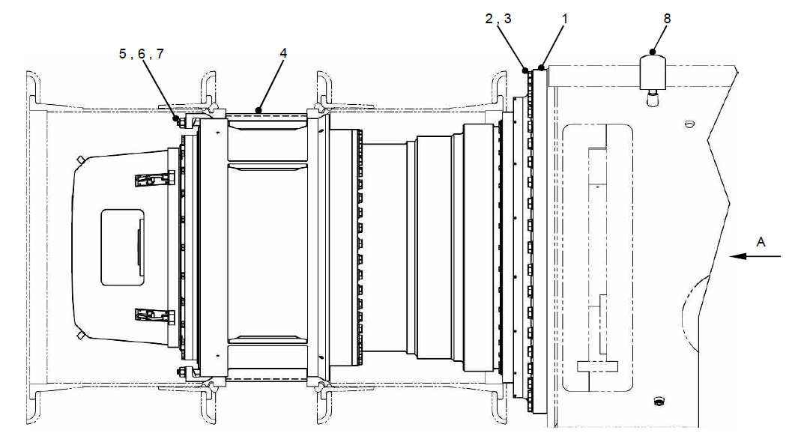
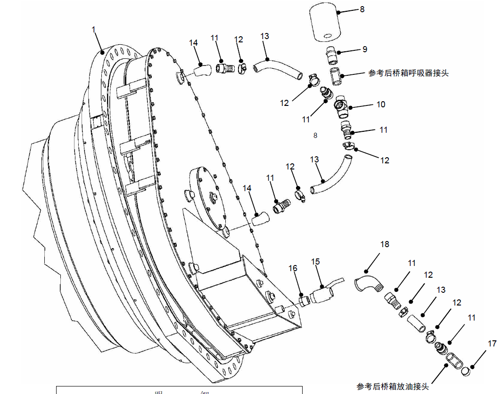

Спецификация
Спецификация
1
Электромотор-колесо в сборе
2
Болт
3
Закаленная прокладка
4
Распорное кольцо обода
5
Шпилька
6
Зажим для обода
7
Фланцевая гайка
8
Респиратор
Рис. 1. Установка электрических колес
Установка электрических колес
Общие сведения
Электрическое колесо представляет собой цилиндрический узел привода электродвигателя, который прикреплен к боковым сторонам коробки осей. Мощность переменного тока от генератора и схемы управления преобразуется в механическую энергию (крутящий момент) с помощью узла якоря двигателя. Выходной крутящий момент шарнира усиливается механизмом редукции планетарной передачи, а затем передается на заднее колесо через кольцевую шестерню.
Для более полного описания работы электрического колеса, пожалуйста, обратитесь к соответствующей информации производителя электрического колеса.
Диагностика неисправностей, ремонт и регулировка
Обращаться к соответствующему изготовителю электрических колес для подробного поиска и устранения неисправностей.
Снятие
Электрическое колесо можно разобрать следующим образом:
1. Припаркуйте ТС на безопасном ровном участке и удерживайте его в неподвижном состоянии, тем самым активируется тормоз, ТС не может сдвинуться с места.
2. Поднимите ТС и демонтируйте шину с ободом в сборе в соответствии с порядком, указанным в главе 7 «Ходовая система».
3. Слить масло в коробке передач с электрическим колесом.
4. Отсоединить все кабели и шланги в коробке оси, которые подключены к электрическому колесу. Отметить его, чтобы снова подключиться.
5. Снимите устройства для удаления камней с кузова или поместите их в место, не создавая помех.
6. Подоприте электромотор-колесо с помощью вилочного погрузчика, крана, тележки или других подходящих устройств.
Примечание: при использовании крана неообходимо использовать подходящее специальное приспособление или снять кузов. См. раздел 2 - "Конструкционные детали".
ПРИМЕЧАНИЕ: Вес каждого электромотор-колеса в сборе с тормозным механизмом увеличивается примерно на 600 кг.
Убедиться, что подъемное устройство достаточно безопасно поднимает этот вес. В то же время электрическое колесо должно поддерживаться по рекомендации производителя электрических колес.
7. Снять болты, которые соединяют электрическое колесо с коробкой оси. Перед подъемом передвинить электрическое колесо горизонтально, пока внутренняя кромка электрического колеса и другие компоненты не выйдут из коробки оси.
8. Поместить электрическое колесо на деревянную подставку по рекомендациям изготовителем. Обеспечите, что деревянная подставка достаточно поддерживает вес, не повреждая электрическое колесо.
9. При необходимости снять устройство тормоза, как описано в разделе 8 - Тормозная система.
Техническое обслуживание
Регулярно проводить обслуживание электрического колеса следующим образом:
1. Ежедневно проверите электрические колеса и устройство тормоза на наличие утечек или повреждений. По мере необходимости отремонтировать или замените.
2. Если повреждены шпильки на электрическом колесе, замените их следующим образом:
ПРИМЕЧАНИЕ: Применение съемника или накручивание комбинированной барашковой гайки на шпильку в качестве съемника поможет снять и установить шпильку электромотор-колеса.
a. Снять старые шпильки с помощью подходящего инструмента.
ПРИМЕЧАНИЕ: Если невозможно выполнение операции с помощью ручного инструмента, проводите частичный подогрев шпильки или нагрев отливки примерно до 485°F (240°C). Примите подходящие меры, выполните демонтаж в горячем состоянии.
b. Проверить и очистить внутренние резьбы на электрическом колесе и, по мере необходимости, отремонтировать в соответствии с инструкциями в руководстве по эксплуатации изготовителя.
c. Очистите внутреннюю резьбу электромотор-колеса и наружную резьбу шпильки подходящим чистящим средством/средством для предварительной обработки, подготовьтесь к использованию фиксатора.
d. Нанесите несколько капель герметика Loctite 242 (жидкого) или достаточного количества материала Loctite 248 (вяжущего) (или его эквивалента) на резьбу, предназначенную для резьбового сопряжения с отливкой.
Примечание: более подробное описание подготовки и использования программы Loctite приведено в разделе 7 -Ходовая система.
e. Ввинтите шпильку в резьбовое отверстие в электромотор-колесе. Затяните до достижения момента 15-20 фунт-футов (20-27 Н.м).
f. Пусть Loctite действовать перед установкой шины и обода и затягиванием гайки зажима для обода.
Примечание: достижение максимальной прочности Loctite обычно занимает 24 часа. В некоторых установках для уменьшения времени схватывания может использоваться специальный катализатор, но он может неблагоприятно влиять на производительность Loctite. Проверить/испытайте перед использованием.
3. Для получения подробной информации и процедур технического обслуживания см. руководство производителя.
Установка
Электрическое колесо может быть установлено следующим образом:
1. Поднять узел электрического колеса и переместите его в соответствующее положение в коробке оси.
ВАЖНО:
Поскольку зазор между тормозными компонентами, установленными на электрическом колесе, и коробкой оси, ограничен, необходимо соблюдать осторожность при монтаже и сборке, чтобы избежать повреждения компонентов тормоза.
2. Установите болты и закаленные шайбы, используемые для соединения электромотор-колеса и картера моста, затяните до достижения момента 1350 фунт-футов (1830 Н.м).
Примечание: если компоненты тормоза были сняты, переустановите их, как описано в разделе 8 - Тормозная система.
3. Соединить шланг и кабель к электрическому колесу по знакам. Слейте воздух, как описано в разделе 8 - Тормозная система.
4. Заполнить коробку передач электрического колеса до требуемого уровня масла. О видах и количестве смазки см. в руководстве производителя.
5. Переустановить узел шины и обода, как описано в разделе 7 - Инструкции ходовой системы.
6. Протестировать и отлаживать в соответствии с процедурой, рекомендованной производителем, перед тем, как ввести ее в эксплуатацию.
Спецификация
9
Прямой штуцер
10
Тройник
11
Трубное соединение
12
Трубчатый зажим
13
Шланг
14
Колено
15
Шаровой клапан
16
Переходное соединение
17
Пробка
18
Колено
Рис. 2 Монтаж дыхательного аппарата и сливного маслопровода
Ходовая система - установка электрических колес
070-0050
Ходовая система - установка электрических колес
070-0050
8
5
Ходовая система - установка электрических колес
070-0060
1
Ходовая система - установка электрических колес
070-0060
2
3
Дополнения - Масса компонентов
200-0090
Ходовая система - установка электрических колес
070-0060
4
5
Дополнения - Масса компонентов
200-0090
См. штуцер дыхательного аппарата картера заднего моста
См. сливной штуцер картера заднего моста
Иллюстрации

